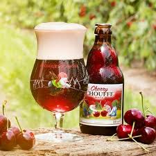
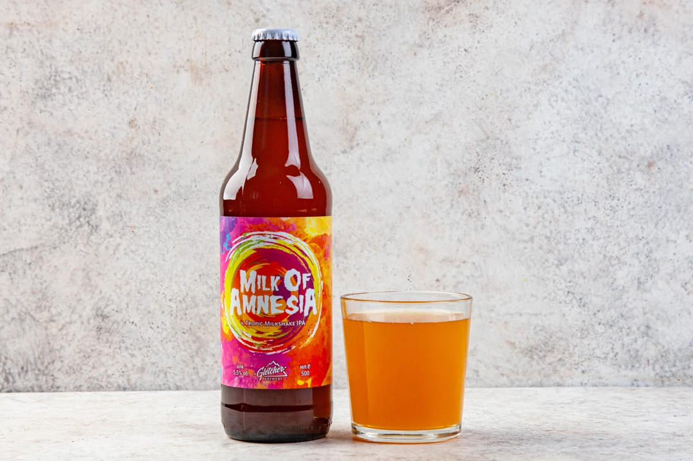
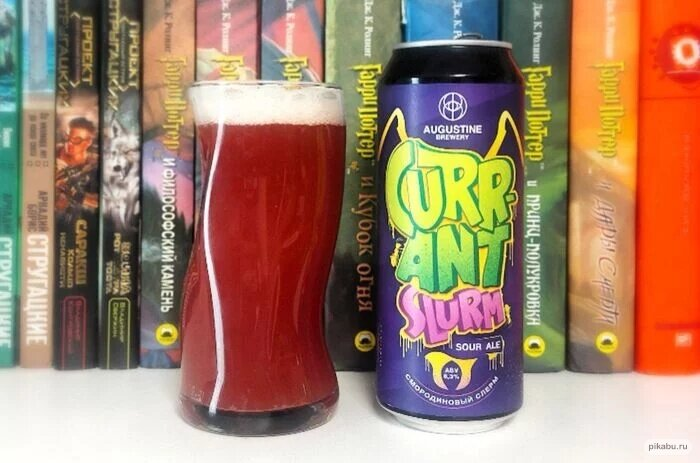
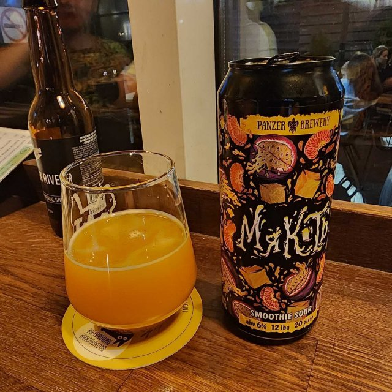
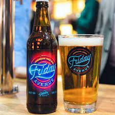

-
1. Cherry beer 5%
Нефильтрованный вишневый эль, приготовленный с добавлением натурального вишневого сока по традиционному бельгийскому рецепту.
 -
2. Milk Of Amnesia 5,5%
Уникальный вкус формируют соки ананаса, манго и маракуйи, сдобренные лактозой, а также четыре разных хмеля: «Магнум», «Колумбус», «Пекко» и «Комет».
 -
3. Смородиновый слерм 6,2%
Смородиновый кисляк с лактозой и пюре смородины, родом из футурамы 6,2% Пивоварня августин
 -
4. Мякоть 6%
Нежнейшая, сочная Мякоть манго, маракуйи и мандарина в вашем бокале! Панзер, 6%
 -
5. Salden's, Tomato Gose Light Chili Provance Edition 5%
светлый эль в стиле Гозе, сваренный с добавлением томатов, соли, кориандра, перца чили и прованских специй. Пиво изготовлено по авторскому рецепту

-
6. Friday Avenue Apa 4,7%
легкое и сладковатое. Верховое брожение сбалансировало горечь и полностью раскрыло богатую ароматику хмеля «Мозаик». Спелый ананас, сочное манго и весенние цветы — эти солнечные ноты придают пиву приятную терпкость
